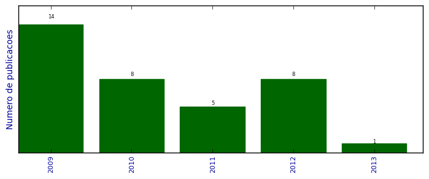

UFSM - Análise do Lattes
Trabalhos completos publicados em anais de congressos

Número total de itens: 36
(A1: 1, A2: 0, B1: 0, B2: 0, B3: 0, B4: 13, B5: 4, C: 0, Qualis não identificado: 18)
Legenda Qualis:
- Publicação para a qual o nome exato do Qualis foi identificado: Qualis <estrato>
- Publicação para a qual um nome similar (não exato) do Qualis foi identificado: Qualis <estrato> (nome similar)
- Publicação para a qual nenhum nome do Qualis foi identificado: Qualis não identificado (nome usado na busca)
2013
| 1. | LEMOS, A. K. ; Librelotto, G.R.. Uso de ambientes virtuais como instrumento facilitador de aprendizagem. Em: X Evidosol/VII Ciltec-online (X Encontro Virtual de Documentação em Software Livre (EVIDOSOL) e VII Congresso Internacional de Linguagem e Tecnologia online (CILTEC-online), 2013. [ citações Google Scholar | citações Microsoft Acadêmico | busca Google ] Qualis: Não identificado (X Evidosol/VII Ciltec-online (X Encontro Virtual de Documentação em Software Livre (EVIDOSOL) e VII Congresso Internacional de Linguagem e Tecnologia online (CILTEC-online)) |
2012
| 1. | FREITAS, L. O. ; Librelotto, G.R. ; PEREIRA, H. ; KASPER, J. ; MARTINI, R. G. ; MOZZAQUATRO, B. ; PEREIRA, R. T.. Applying pervasive computing in an architecture for homecare environments. Em: IEEE 9th International Conference on Ubiquitous Computing and Intelligence/IEEE 9th International Conference on Autonomic and Trusted Computing, 2012.  [ citações Google Scholar | citações Microsoft Acadêmico | busca Google ] Qualis: A1 (International Conference on Ubiquitous Computing) |
| 2. | FREITAS, L. O. ; PEREIRA, R. T. ; PEREIRA, H. ; MARTINI, R. G. ; MOZZAQUATRO, B. ; KASPER, J. ; Librelotto, G.R.. A Methodology for an Architecture of Pervasive Systems to Homecare Environments. Em: CENTERIS 2012 - Conference on ENTERprise Information Systems / HCIST 2012 - International Conference on Health and Social Care Information Systems and Technologies, v. 5, p. 820-829, 2012. [ citações Google Scholar | citações Microsoft Acadêmico | busca Google ] Qualis: Não identificado (CENTERIS 2012 - Conference on ENTERprise Information Systems / HCIST 2012 - International Conference on Health and Social Care Information Systems and Technologies) |
| 3. | KASPER, J. ; GEBERT, C. ; LIBRELOTTO, Giovani R. ; SACCOL, D.. Estudo de métodos para execução de regras ativas através da detecção de eventos temporais em sistemas de gerenciamento de bancos de dados. Em: XI Simpósio de Informática da UNIFRA, 2012. [ citações Google Scholar | citações Microsoft Acadêmico | busca Google ] Qualis: Não identificado (XI Simpósio de Informática da UNIFRA) |
| 4. | LIBRELOTTO, Giovani R. ; BASTIANI, E. ; SOARES, K.. Uma abordagem para monitoramento de pacientes com Alzheimer em ambientes homecare pervasivos. Em: WIM 2012 - XII Workshop de Informática Médica, 2012. [ citações Google Scholar | citações Microsoft Acadêmico | busca Google ] Qualis: B4 (Workshop de Informática Médica) |
| 5. | LIBRELOTTO, Giovani R. ; PEREIRA, R. T. ; AZEVEDO, R. P. ; MOMBACH, J. C. M.. Utilizando a Ontocancro para traçar o perfil das vias de manutenção da estabilidade genômica. Em: WIM 2012 - XII Workshop de Informática Médica, 2012. [ citações Google Scholar | citações Microsoft Acadêmico | busca Google ] Qualis: B4 (Workshop de Informática Médica) |
| 6. | MARTINI, R. G. ; LIBRELOTTO, Giovani R.. Personalização automática de interface para dispositivos móveis em Ambientes Pervasivos. Em: SEMISH 2012 - XXXIX Seminário Integrado de Software e Hardware, 2012. [ citações Google Scholar | citações Microsoft Acadêmico | busca Google ] Qualis: B4 (Seminário Integrado de Software e Hardware) |
| 7. | MARTINI, RICARDO GIULIANI ; LIBRELOTTO, GIOVANI RUBERT ; DE AZEVEDO, RENATO PREIGSCHADT ; FIORIN, ANDRE ; KASPER, JEFERSON ; MOZZAQUATRO, BRUNO AUGUSTI ; PEREIRA, RAFAEL. An approach to automatic customization of user interfaces for mobile devices in pervasive environments. Em: 2012 XXXVIII Conferencia Latinoamericana En Informatica (CLEI), p. 1-7, 2012. [ citações Google Scholar | citações Microsoft Acadêmico | busca Google ] Qualis: B4 (CLEI) |
| 8. | PEREIRA, H. ; LIBRELOTTO, Giovani R.. Definição de uma Arquitetura para o Uso de Computação nas Nuvens em Ambientes de Computação Pervasiva. Em: SEMISH 2012 - XXXIX Seminário Integrado de Software e Hardware, 2012. [ citações Google Scholar | citações Microsoft Acadêmico | busca Google ] Qualis: B4 (Seminário Integrado de Software e Hardware) |
2011
| 1. | LIBRELOTTO, Giovani R. ; FREITAS, L. O. ; FIORIN, A. ; MOZZAQUATRO, B. ; PASETTO, L. F. ; MARTINI, R. G. ; AZEVEDO, R. P. ; PEREIRA, R. T.. OntoHealth: A System to Process Ontologies Applied to Health Pervasive Environment. Em: 4th International Conference on Ubi-media Computing (U-Media 2011), p. 59-64, 2011. [ citações Google Scholar | citações Microsoft Acadêmico | busca Google ] Qualis: Não identificado (4th International Conference on Ubi-media Computing (U-Media 2011)) |
| 2. | PASQUALIN, D. P. ; LIBRELOTTO, Giovani R. ; VIZZOTTO, J. K.. Cálculo de Ambientes Tipado para Aplicações Pervasivas Seguras. Em: 11a Escola Regional de Alto Desempenho, p. 111-119, 2011. [ citações Google Scholar | citações Microsoft Acadêmico | busca Google ] Qualis: B5 (Escola Regional de Alto Desempenho) |
| 3. | PASQUALIN, D. P. ; VIZZOTTO, J. K. ; LIBRELOTTO, Giovani R. ; BOIS, A. R.. uMED: Sensibilidade ao Contexto na Medicina Ubíqua. Em: 11a Escola Regional de Alto Desempenho (ERAD 2011), 2011. [ citações Google Scholar | citações Microsoft Acadêmico | busca Google ] Qualis: B5 (Escola Regional de Alto Desempenho) |
| 4. | PIOVESAN, S. D. ; AMARAL, E. M. H. ; LIBRELOTTO, Giovani R. ; MEDINA, R. D.. Ontologia para o Ambiente Virtual de Aprendizagem Moodle. Em: VI Congresso Ibero-Americano de Telemática, 2011. [ citações Google Scholar | citações Microsoft Acadêmico | busca Google ] Qualis: Não identificado (VI Congresso Ibero-Americano de Telemática) |
| 5. | SIMAO, E. ; SINIGAGLIA, M. ; BUGS, C. A. ; CASTRO, M. A. A. ; LIBRELOTTO, Giovani R. ; MOMBACH, J. C. M.. Anti-cancer barrier during tumor evolution: a study of expression of genome maintenance pathways. Em: 7th International Conference of the Brazilian Association for Bioinformatics and Computational Biology, 2011. [ citações Google Scholar | citações Microsoft Acadêmico | busca Google ] Qualis: B4 (International Conference of the Brazilian Association for Bioinformatics and Computational Biology) |
2010
| 1. | CABRAL, H. C. B. ; LIBRELOTTO, Giovani R. ; SIMAO, E. ; SINIGAGLIA, M. ; CASTRO, M. A. A. ; MOMBACH, J. C. M.. O Processamento de uma Ontologia sobre a Integração de Dados sobre Vias Metabólicas relativas ao Câncer. Em: II Simpósio de Computação Aplicada - SCA 2010, 2010. [ citações Google Scholar | citações Microsoft Acadêmico | busca Google ] Qualis: Não identificado (II Simpósio de Computação Aplicada - SCA 2010) |
| 2. | FERREIRA, G. L. ; LIBRELOTTO, Giovani R. ; AUGUSTIN, I. ; SILVA, F. L. ; MACHADO, A. ; YAMIN, A.. Extending a Middleware for Pervasive Computing to Programmable Task Management in an Environment of Personalized Clinical Activities. Em: The Fourth International Conference on Mobile Ubiquitous Computing, 2010. [ citações Google Scholar | citações Microsoft Acadêmico | busca Google ] Qualis: Não identificado (The Fourth International Conference on Mobile Ubiquitous Computing) |
| 3. | LIBRELOTTO, Giovani R. ; CABRAL, H. C. B. ; PEREIRA, R. T. ; HENRIQUES, Pedro Rangel ; SINIGAGLIA, M. ; CASTRO, M. A. A. ; SIMAO, E. ; MOMBACH, J. C. M.. Uma Integração de Dados sobre Vias Metabólicas relativas ao Câncer: a ontologia Ontocancro. Em: 10ª Conferência da Associação Portuguesa de Sistemas de Informação (CAPSI 2010), 2010. [ citações Google Scholar | citações Microsoft Acadêmico | busca Google ] Qualis: Não identificado (10ª Conferência da Associação Portuguesa de Sistemas de Informação (CAPSI 2010)) |
| 4. | LIBRELOTTO, Giovani R. ; FREITAS, L. O. ; GASSEN, J. B.. Aplicando o OntoHealth na representação de um contexto hospitalar. Em: II Simpósio de Computação Aplicada - SCA 2010, 2010. [ citações Google Scholar | citações Microsoft Acadêmico | busca Google ] Qualis: Não identificado (II Simpósio de Computação Aplicada - SCA 2010) |
| 5. | MACHADO, A. ; LIBRELOTTO, Giovani R. ; AUGUSTIN, I.. Ferramenta para Definição de Contexto pelo Usuário-Final na Programação de Tarefas Clínicas em um Sistema de Saúde Pervasivo. Em: SBCUP II Simpósio Brasileiro de Computação Ubíqua e Pervasiva, 2010. [ citações Google Scholar | citações Microsoft Acadêmico | busca Google ] Qualis: B5 (Simpósio Brasileiro de Computação Ubíqua e Pervasiva) |
| 6. | MACHADO, A. ; VICENTINI, C. ; LIBRELOTTO, Giovani R. ; AUGUSTIN, I.. Ciência do Contexto para Tarefas Clínicas em um Sistema de Saúde Pervasivo. Em: XXXVI Conferência Latino-americana de Informática (XXXVI CLEI), 2010. [ citações Google Scholar | citações Microsoft Acadêmico | busca Google ] Qualis: Não identificado (XXXVI Conferência Latino-americana de Informática (XXXVI CLEI)) |
| 7. | MARTINS, M. O. ; VIZZOTTO, J. K. ; LIBRELOTTO, Giovani R.. Simulando o modelo ORCH-OR através de autômatos celulares quânticos. Em: II Simpósio de Computação Aplicada - SCA 2010, 2010. [ citações Google Scholar | citações Microsoft Acadêmico | busca Google ] Qualis: Não identificado (II Simpósio de Computação Aplicada - SCA 2010) |
| 8. | PASQUALIN, D. P. ; VIZZOTTO, J. K. ; LIBRELOTTO, Giovani R. ; BOIS, A. R.. Linguagens de Programação para a Computação Pervasiva. Em: ERAD 2010 - Escola Regional de Alto Desempenho, 2010. [ citações Google Scholar | citações Microsoft Acadêmico | busca Google ] Qualis: B5 (Escola Regional de Alto Desempenho) |
2009
| 1. | AZEVEDO, R. P. ; PEREIRA, R. T. ; MARTINI, R. G. ; KURTZ, G. C. ; NUNES, R. C. ; LIBRELOTTO, Giovani R.. Uma abordagem alternativa para consultar o banco de dados do PubMed. Em: VII SEMINFO - Seminário de Informática RS'2009, 2009. [ citações Google Scholar | citações Microsoft Acadêmico | busca Google ] Qualis: Não identificado (VII SEMINFO - Seminário de Informática RS'2009) |
| 2. | FERREIRA, G. L. ; AUGUSTIN, I. ; LIBRELOTTO, Giovani R. ; SILVA, F. L. ; YAMIN, A.. Middleware for management of end-user programming of clinical activities in a pervasive environment. Em: Workshop on Middleware for Ubiquitous and Pervasive Systems, v. 389, p. 7-12, 2009. [ citações Google Scholar | citações Microsoft Acadêmico | busca Google ] Qualis: Não identificado (Workshop on Middleware for Ubiquitous and Pervasive Systems) |
| 3. | FERREIRA, G. L. ; LIBRELOTTO, Giovani R. ; SILVA, F. L. ; AUGUSTIN, I.. Adaptando o Middleware EXEHDA para o Tratamento de Atividades Clínicas. Em: XXXV Conferencia Latinoamericana de Informática (CLEI 2009), p. 37-37, 2009. [ citações Google Scholar | citações Microsoft Acadêmico | busca Google ] Qualis: B4 (Conferencia Latinoamericana de Informática) |
| 4. | FERREIRA, G. L. ; SILVA, F. L. ; LIBRELOTTO, Giovani R. ; AUGUSTIN, I. ; YAMIN, A.. Introduzindo o Gerenciando de Tarefas Clínicas em um Middleware da Computação Pervasiva. Em: IX Workshop de Informática Médica (WIM 2009), 2009. [ citações Google Scholar | citações Microsoft Acadêmico | busca Google ] Qualis: B4 (Workshop de Informática Médica) |
| 5. | GASSEN, J. B. ; FREITAS, L. O. ; VIZZOTTO, S. ; AZEVEDO, R. P. ; LIBRELOTTO, Giovani R.. Raciocínio sobre ontologias que descrevem conhecimento em um ambiente hospitalar pervasivo. Em: VII SEMINFO - Seminário de Informática RS'2009, 2009. [ citações Google Scholar | citações Microsoft Acadêmico | busca Google ] Qualis: Não identificado (VII SEMINFO - Seminário de Informática RS'2009) |
| 6. | LIBRELOTTO, Giovani R. ; GASSEN, J. B. ; FREITAS, L. O. ; SILVA, F. L. ; AUGUSTIN, I.. A Definição de uma API para o Processamento de Ontologias em Hospitais Pervasivos. Em: V Simpósio Brasileiro de Sistemas de Informação (SBSI 2009), p. 01-11, 2009. [ citações Google Scholar | citações Microsoft Acadêmico | busca Google ] Qualis: B4 (Simpósio Brasileiro de Sistemas de Informação) |
| 7. | LIBRELOTTO, Giovani R. ; HENRIQUES, Pedro Rangel. Especificação e Processamento de Ontologias para a Semantic Web. Em: V Simpósio Brasileiro de Sistemas de Informação (SBSI 2009), p. 320-324, 2009. [ citações Google Scholar | citações Microsoft Acadêmico | busca Google ] Qualis: B4 (Simpósio Brasileiro de Sistemas de Informação) |
| 8. | LIBRELOTTO, Giovani R. ; VIZZOTTO, J. K. ; AUGUSTIN, I.. Um Compilador para a Linguagem Reativa Síncrona Distribuída. Em: Third Workshop on Languages and Tools for Parallel and Distributed Programming, v. 13, 2009. [ citações Google Scholar | citações Microsoft Acadêmico | busca Google ] Qualis: Não identificado (Third Workshop on Languages and Tools for Parallel and Distributed Programming) |
| 9. | MARTINI, R. G. ; KURTZ, G. C. ; FREITAS, L. O. ; GASSEN, J. B. ; LIBRELOTTO, Giovani R.. Um Sistema para o Processamento de Informações Eletrônicas de Pacientes em Hospitais Pervasivos baseado na API do Google Health. Em: VII SEMINFO - Seminário de Informática RS'2009, 2009. [ citações Google Scholar | citações Microsoft Acadêmico | busca Google ] Qualis: Não identificado (VII SEMINFO - Seminário de Informática RS'2009) |
| 10. | PEREIRA, H. ; PASETTO, L. F. ; TURCHETTI, Rogério Correa ; BAGGIO, J. E. ; LIBRELOTTO, Giovani R.. Utilizando o Gerenciador de Rede WICD Com Localização Física de Dispositivos. Em: X Workshop de Software Livre, 2009. [ citações Google Scholar | citações Microsoft Acadêmico | busca Google ] Qualis: Não identificado (X Workshop de Software Livre) |
| 11. | PEREIRA, R. T. ; LIBRELOTTO, Giovani R. ; HENRIQUES, Pedro Rangel. Uma Metodologia para Consultas aos Bancos de Dados do NCBI. Em: 4ª Conferência Ibérica de Sistemas e Tecnologias de Informação (CISTI 2009), 2009. [ citações Google Scholar | citações Microsoft Acadêmico | busca Google ] Qualis: B4 (CISTI) |
| 12. | SILVA, F. L. ; FERREIRA, G. L. ; RIZZETTI, T. A. ; LIBRELOTTO, Giovani R. ; AUGUSTIN, I.. Ferramenta para a Programação pelo Usuário-Final de Tarefas Clínicas em um Ambiente de Saúde Ubíquo. Em: XXXV Conferencia Latinoamericana de Informática (CLEI 2009), p. 37-37, 2009. [ citações Google Scholar | citações Microsoft Acadêmico | busca Google ] Qualis: B4 (Conferencia Latinoamericana de Informática) |
| 13. | SOARES, K. ; CABRAL, H. C. B. ; LIBRELOTTO, Giovani R.. Uma Metodologia para a Visualização das Redes Metabólicas da Ontocancro. Em: Simpósio de Informática da Região Centro do RS (SIRC 2009), 2009. [ citações Google Scholar | citações Microsoft Acadêmico | busca Google ] Qualis: Não identificado (Simpósio de Informática da Região Centro do RS (SIRC 2009)) |
| 14. | VIZZOTTO, J. K. ; LIBRELOTTO, Giovani R. ; SABRY, A.. Reasoning About General Quantum Programs over Mixed States. Em: Brazilian Symposium on Formal Methods (SBMF 2009), 2009. [ citações Google Scholar | citações Microsoft Acadêmico | busca Google ] Qualis: B4 (SBMF) |
(*) Relatório criado com produções desde 2009 até HOJE
Data de processamento: 11/04/2014 14:27:41